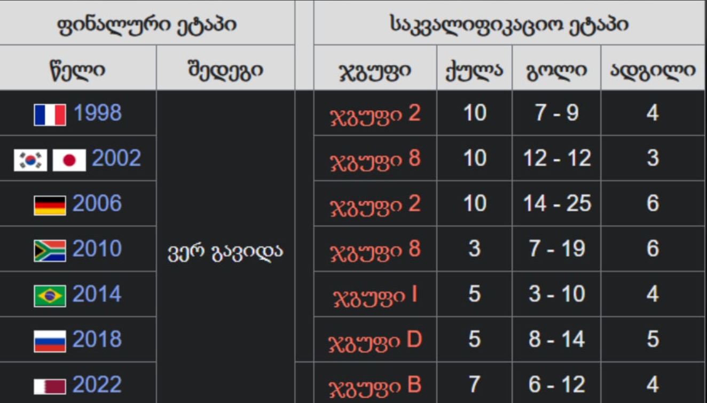

გუნდური სპორტი რომელშიც 11 წევრისგან შემდგარი 2 გუნდი ეთამაშება ერთმანეთს.
თამაში მიმდინარეობს მართკუთხა მინდორზე საგოლე კარით ორივე ბოლოში. თამაშის მიზანი გუნდის წევრებს
შორის ბურთით მანევრირებაა მოწინააღმდეგე გუნდის კარში გოლის გასატანად. ამ სპორტის მთავარი დამახასიათებელი
წესის მიხედვით, მოთამაშეებს, მეკარის გარდა, ბურთზე ხელის ან მკლავის გამოყენების უფლება არ აქვთ თამაშის პერიოდში.
მატჩის გამარჯვებული ის გუნდია, რომელიც უფრო მეტ გოლს გაიტანს თამაშის ბოლომდე. ფეხბურთში არის 1 მთავარი
და 4 დამხმარე მსაჯი, აქედან 2 გვერდითი არბიტრი, 2 პირითი ხაზის დამხმარე მსაჯი. მთავარ მსაჯს აქვს უფლება მიიღოს
გადაწყვეტილება დააჯარიმოს თუ არა გუნდი კონკრეტულ ეპიზოდში თამაშის წესების დარღვევისთვის. მსაჯს შეუძლია ფეხბურთელს
უჩვენოს ყვითელი ან წითელი ბარათი. ეს იმაზეა დამოკიდებული თუ რამდენად უხეშად ითამაშა ფეხბურთელმა. მსაჯის მიერ
ყვითელი ბარათის ორჯერ ან პირდაპირ წითელი ბარათის ჩვენების შემთხვევაში ფეხბურთელი ტოვებს მინდორს და ავტომატურად
ტოვებს მისი გუნდის მომდევნო შეხვედრასაც იმ კონკრეტულ ტურნირზე, სადაც მიიღო წითელი ბარათი. იმ შემთხვევაში თუ
წითელიბარათი ფეხბურთელმა არასპორტული საქციელის გამო მიიღო, შესაძლოა მას რამდენიმე თამაშის გამოტოვებაც მოუწიოს
(მისი საკითხი განიხილება უეფას ან ფიფას სადისციპლინო კომიტეტზე).
თამაში თანამედროვე სახით ჩამოყალიბდა ინგლისში, რასაც ფეხბურთის ასოციაციის შექმნა მოჰყვა, რომლის 1863 წელს
შედგენილმა კანონებმა განაპირობა სპორტის განვითარება ისე, როგორც მას ამჟამად თამაშობენ. ფეხბურთის საერთაშორისო მმართველი
ორგანიზაციაა ფიფა (ფრანგ. Fédération Internationale de Football Association; აკრონიმი - FIFA). ყველაზე პრესტიჟული
საფეხბურთო შეჯიბრია ფიფა-ს მსოფლიო ჩემპიონატი, რომელსაც ყველაზე მეტი მაყურებელი ჰყავს მსოფლიოში სპორტულ ღონისძიებებს
შორის.!
როდესაც ფეხბურთი შეიქმნა, ჩამოყალიბდა საფეხბურთო გუნდები. დღეს-დღეობით ყველა ქვეყანას თავისი გუნდი ყავს.
მაგალითისთვის რომ მოვიყვანო ავიღებ საქართველოს ნაკრებს.
საქართველოს ნაკრები
საქართველოს ეროვნული საფეხბურთო ნაკრები — წარმოადგენს საქართველოს საერთაშორისო ტურნირებზე და შეხვედრებზე ფეხბურთში.
ნაკრების კონტროლს და ხელმძღვანელობას ახორციელებს საქართველოს ფეხბურთის ფედერაცია, რომელიც ფიფას და უეფას წევრია 1992
წლიდან. საშინაო შეხვედრებს თბილისში, ბორის პაიჭაძის ეროვნული სტადიონზე მასპინძლობს. საქართველოს ეროვნული ნაკრების
საუკეთესო შედეგებია 1996 წლის ევროპის ჩემპიონატისა და 2002 წლის მსოფლიო ჩემპიონატის საკვალიფიკაციო ეტაპზე დაკავებული
მესამე ადგილები. ასევე, 2018-19 უეფას ერთა ლიგის მეოთხე D დივიზიონის პირველ ჯგუფში და 2022-23 უეფას ერთა ლიგის მესამე
C დივიზიონის მეოთხე ჯგუფში დაკავებული პირველი ადგილები, რამაც ნაკრებს უეფას ევრო 2020-ის და ევრო 2024-ის შესარჩევი
პლეი-ოფის საგზურები მოუპოვა. 2024 წლის 4 აპრილის მდგომარეობით, საქართველოს ეროვნული ნაკრები ფიფას რეიტინგში 75-ე
ადგილზეა.
ისტორია
საქართველოს ეროვნული ნაკრების ისტორია 1990 წელს იწყება, მანამდე ქართველი ფეხბურთელები თამაშობდნენ საბჭოთა კავშირის
ეროვნულ საფეხბურთო გუნდში. პირველი მატჩი საქართველოს საუკეთესო ფეხბურთელებმა ლიეტუვასთან გამართეს, რადგანაც პირველად
ლიეტუვა გამოეხმაურა ქართული მხარის მიწვევას. ეს მატჩი 1990 წლის 27 მაისს ეროვნულ სტადიონზე გაიმართა. მასპინძელთა ღირსებას
იცავდენენ: ასლან ბალაძე, გელა კეტაშვილი, კახა ცხადაძე (71' კახაბერ კაჭარავა), დიმიტრი კუდინოვი, გია ფირცხალავა, გიორგი
ნადირაძე, თემურ ქეცბაია, ზაზა რევიშვილი (46' მელორ ბიგვავა), ოთარ კორღალიძე (46' როსტომ თორღაშვილი), გია გურული,
მამუკა ფანცულაია (46' გოჩა გოგრიჭიანი). მწვრთნელი გივი ნოდია. შეხვედრა ფრედ — 2-2 დამთავრდა. ეს იყო დამოუკიდებლობის
აღდგენამდე გამართული ერთადერთი მატჩი. შეხვედრას 55 000 მაყურებელი დაესწრო. ბალტიისპირელები ორჯერ იგებდნენ, მაგრამ
ჯერ გია გურულმა გაათანაბრა ანგარიში, მერე კი კახა კაჭარავამ. საქართველოს ეროვნული ნაკრების პირველი გოლი გია გურულმა
გაიტანა. ნაკრების პირველი კაპიტანი ოლიმპიული ჩემპიონი გელა კეტაშვილი იყო. 1990 წელს საქართველოს ფეხბურთის ფედერაცია
ჯერ კიდევ არ იყო ფიფას და უეფას წევრი, ამიტომ ლიეტუველებთან გამართული მატჩი ნაკრების ფიფას ჩამონათვალში არ ირიცხება.
ამის შემდეგ 1991 წლის 2 ივლისს, საქართველოს ნაკრებმა კიდევ ერთი ამხანაგური შეხვედრა გამართა მოლდოვასთან და ანგარიშით 4-2
გაიმარჯვა.1992 წელს საქართველოს ფეხბურთის ფედერაცია ფიფას და უეფას წევრი გახდა და საქართველომ მიიღო შეჯიბრებებში
მონაწილეობის უფლება.პირველი ოფიციალური თამაში იყო ევრო 96-ის შესარჩევ ციკლში, სადაც ქართველი ფეხბურთელები მოლდოვასთან
1-0 დამარცხდნენ. ეს იყო 1994 წლის სექტემბერში. საქართველო ამ ჯგუფში მე-3 ადგილზე გავიდა, გადაუსწრო მოლდოვას და უელსს,
მაგრამ 7 ქულით ჩამორჩა მეორეადგილოსან ბულგარეთს. მსოფლიოს 1998 წლის ჩემპიონატის შესარჩევ ციკლში საქართველოს ეროვნულმა
ნაკრებმა 8 თამაშიდან მოიპოვა 3 გამარჯვება, 1 ფრე და ჯგუფში მესამე-მეოთხე ადგილი პოლონეთთან გაიყო, თუმცა მეტი კოეფიციენტების
გამო ქართველებზე წინ პოლონელები გავიდნენ. აღსანიშნავია, რომ 1998 წელს საქართველოს ნაკრებს ფიფას რეიტინგში ისტორიაში ყველაზე
მაღალი — 42-ე ადგილი ეკავა. 2000 წლის ევროპის ჩემპიონატის შესარჩევ ციკლში საქართველოს ეროვნულმა ნაკრებმა 10 თამაშიდან 1 მოგებას და 2 ფრეს მიაღწია და 5 ქულით ჯგუფში ბოლო ადგილზე გავიდა.
საქართველო 1-0 ხორვატია
2002 წლის მუნდიალის შესარჩევ ციკლში კი საქართველოს ნაკრებმა გაიმეორა ევროპის 1996 წლის ჩემპიონატის შესარჩევ ეტაპზე მიღწეული
წარმატება და ჯგუფში მესამე ადგილი დაიკავა. ამის შემდეგ კი იწყება ნამდვილი რეგრესის ხანა — ევრო 2004-ის შესარჩევში გუნდმა
ბოლო ადგილი დაიკავა, თუმცა ამ ციკლში ქართველებმა ისტორიაში ერთ-ერთი ხმაურიანი გამარჯვება იზეიმეს, დაამარცხეს რა რუსეთის
ეროვნული ნაკრები ანგარიშით 1-0. შეხვედრის ერთადერთი გოლი მალხაზ ასათიანმა გაიტანა. იგივე შედეგი გაიმეორა 2006 წლის
მსოფლიო ჩემპიონატის შესარჩევში ქართველებმა მხოლოდ ყაზახეთის ეროვნულ ნაკრებს აჯობეს, თუმცა აღსანიშნავია, რომ ყაზახებმა
უეფა-ს წევრის სტატუსით ჩატარებულ მატჩებში პირველი ქულა სწორედ საქართველოს ნაკრებთან მოიპოვეს.
ევრო 2008-ის შესარჩევში საქართველომ ტრადიციას არ უღალატა და კვლავ მხოლოდ ერთ გუნდს, ამჯერად ფარერების ნაკრებს გადაასწრო,
თუმცა საქართველოს ნაკრებმა ამ შესარჩევშიც ჩაატარა დასამახსოვრებელი მატჩები, დაამარცხა რა ფარერების ნაკრები გასვლაზე 6-0,
შესარჩევი ციკლის გახსნით მატჩში და ციკლის მიწურულს 2-0 დაამარცხა იმ პერიოდში საკმაოდ ძლიერი შოტლანდიის ნაკრები,
რომელმაც ამ წაგებით ფაქტობრივად დაკარგა ჯგუფიდან გასვლის შანსი. ამ მატჩში გოლები ლევან მჭედლიძემ და დავით სირაძემ
გაიტანეს. ამავე წელს ამხანაგურ თამაშებსში ქართველებმა დაამარცხეს ურუგვაის და თურქეთის ნაკრებები. შემდეგი შესარჩევი ციკლი
(მსოფლიო 2010) კი ანტირეკორდის ხანა იყო — ქართველებმა ვერცერთი თამაში მოიგეს და ჯგუფში ბიოლო ადგილზე გავიდნენ. ამ
დროს ნაკრებს ცნობილი არგენტინელი სპეციალისტი ექტორ რაულ კუპერი წვრთნიდა.
ქეცბაიას მწვრთნელობის პერიოდი
2010 წლის 1 იანვარს ნაკრებს სათავეში ცნობილი ქართველი ფეხბურთელი თემურ ქეცბაია ჩაუდგა. მისი ხელმძღვანელობით ნაკრებმა
ისტორიული შედეგი აჩვენა — 2010 წელს თამაში არ წაუგია. 2012 წლის ევროპის ჩემპიონატის შესარჩევ ჯგუფში საქართველოს ნაკრებს
საბერძნეთის, ხორვატიის, ისრაელისა და ლატვიის ეროვნულ გუნდები შეხვდა. ამას მოჰყვა ქართული ფეხბურთის ისტორიაში
ყველაზე ხმაურიანი გამარჯვება — 1-0 ხორვატიასთან, სადაც ქართველებმა, ლევან კობიაშვილის მიერ 90-ე წუთზე გატანილი
გოლით ჯგუფის ფავორიტი ხორვატია დაამარცხეს. მაგრამ მას შემდეგ ნაკრებში კრიზისი დაიწყო. საბოლოოდ, ქართველებმა
2012 წლის ევროპის ჩემპიონატის შესარჩევ ჯგუფში მხოლოდ მალტის ნაკრებს გაუსწრეს და ბოლოსწინა მეხუთე ადგილი დაიკავეს.
2011 წელს სანაკრებო კარიერა დაასრულეს ვეტერანებმა, ლევან კობიაშვილმა და ალექსანდრე იაშვილმა, რომლებზეც მთავარმა
მწვრთნელმა თემურ ქეცბაიამ განაცხადა, რომ აღარ გამოიძახებდა ნაკრების გაახალგაზრდავების გამო.2014 წლის მსოფლიო
ჩემპიონატის შესარჩევ ჯგუფში ჯვაროსნებს მეტოქეებად მსოფლიოსა და ევროპის მოქმედი ჩემპიონები ესპანეთისა და საფრანგეთის
ნაკრებები, ასევე ფინეთისა და ბელარუსის გუნდები შეხვდა. საქართველოს ნაკრებმა ციკლი კარგად დაიწყო, თბილისში მოუგო
ბელარუსს 1-0, ხოლო 4 დღეში ესპანეთთან მინიმალური სხვაობით წააგო. მიუხედავად კარგი სტარტისა, ნაკრებმა შემდეგი
მატჩები ჩააგდო, ჰელსინკიში ფინეთის ნაკრებთან შეხვედრა ფრედ 1-1 დაასრულა, ხოლოდ რამდენიმე დღეში ბელარუსთან
სტურად დამარცხდ 2-0. საბოლოოდ საქართველოს ნაკრებმა, გაასწრო რა მხოლოდ ბელარუსს ჯგუფში კვლავ ბოლოსწინა,
მეოთხე ადგილი დაიკავა. ციკლის მანძილზე ქეცბაიას კონფლიქტი მოუვიდა ნაკრების მცველებთან, ზურაბ ხიზანიშვილთან და
ალექსანდრე ამისულაშვილთან, რომელებმაც ქეცბაიას ნაკრებში თამაშზე უარი განაცხადეს. ევრო 2016-ს საკვალიფიკაციო ეტაპზე
პირველი ოთხი მატჩიდან სამის წაგების ირლანდია 1;2, შოტლანდია 0-1, პოლონეთი 0-4 შემდგომ ქეცბაია მწვრთნელის
პოსტიდან გადადგა. მის ნაცვლად მთავარ მწვრთნელის პოსტი კახაბერ ცხადაძემ დაიკავა, რომელსაც პოსტი 1 წელი ეკავა და
2016 წლის დასაწყისში თანამდებობა დაატოვებინეს სახელფასო სკანდალის შემდეგ. მის შემცვლელად სლოვაკი ვლადიმერ
აისი დაინიშნა.
უკანასკნელი ტურნირები

ყველა ქვეყანას გააჩნია გუნდის ფორმა. საქართველოსაც ქონდა 1995-წლიდან მოყოლებული ფორამები და ისინი ესე გამოიყურებოდა.